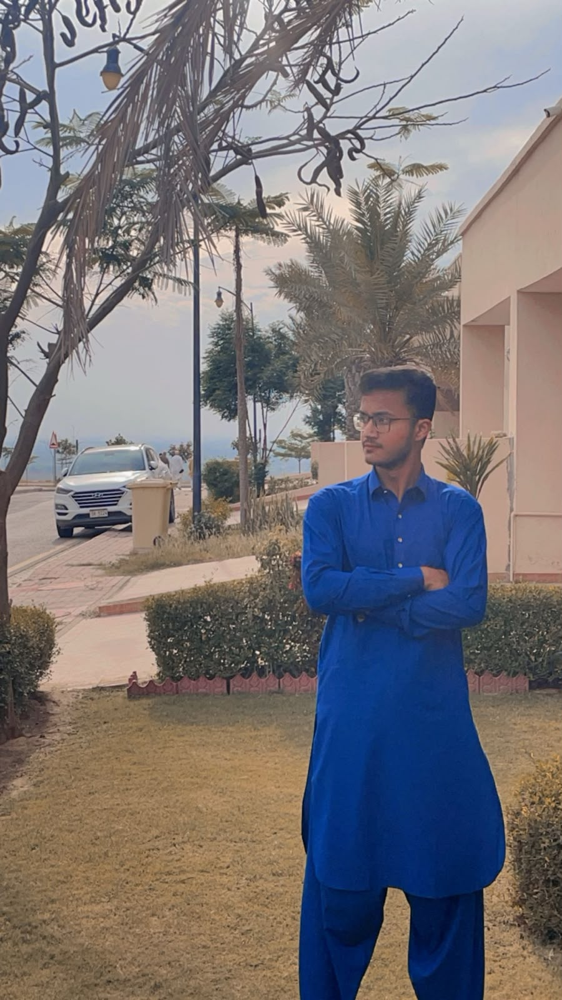

Find the home that fits your life.
Houses and plots in Bahria Town Karachi. Browse our listings, then request a quote on the ones you like. We reply personally.
See listingsNewest houses

Meet our CEO, Omer Rehman
Ain real estate was established five years ago with a simple idea: buying or selling a property should feel honest and straightforward. Under the leadership of our CEO, Omer Rehman, the company has grown from a small office into a trusted name in Bahria Town Karachi.
With Omer Rehman's guidance and personal attention, our team has dealt with more than 1,000 clients, helping families, investors and first-time buyers find the right property at the right price.
About Bahria Town Karachi
Bahria Town Karachi is a large master-planned community on the outskirts of the city, along the M-9 motorway. It is a gated community with wide roads, planned residential precincts, round-the-clock security and well-kept green spaces.
Residents enjoy landmarks and amenities such as the Grand Jamia Mosque, a theme park, golf facilities, schools, hospitals and shopping areas, which is why it remains one of the most sought-after places in Karachi to live and invest. Our office sits in Precinct 10A, so we know the neighbourhood well.